RTLDI (Right to Life Deficit Index) extended to measure capital exclusions — the lost potential GDP where capital is kept out of the economy because the nine protections necessary for it to operate are absent. The global total is on the order of 15 trillion dollars in excluded capital waiting to be brought back in.
The RTLDI (Right to Life Deficit Index) extended here quantifies capital exclusions — the lost potential GDP that results when the nine protections required for capital to operate safely are not present. Use the R score and the 9-component breakdowns as practical economic intelligence to see where bringing specific protections online can bring excluded capital back into the economy.
For policymakers: Filter by your region. Look at the current level of each lever and the volume of capital currently excluded in your jurisdiction. The levers are low-cost relative to the scale of excluded GDP they correspond to.
For investors and analysts: Higher R is associated with less capital being excluded from the economy. The nine levers are not outcomes of wealth — they are conditions that allow capital to operate and scale to be realized.
For anyone: This is a map of where the global economy is leaving capital on the table. Activating the levers is how that excluded capital can be brought back in.
| # | Country | Region | R | G₀ (USD) | Pop | Unrealized Scale / cap | Unrealized Scale (USD) |
|---|
The blocks below contain the complete regional summaries (identical data to the print RTLDI_ATLAS_2026_regions.pdf). Each shows the current level of the nine RTLDI levers and the volume of capital exclusions in that region — the lost potential GDP that is sitting outside the economy because the protections required for capital to operate are not present. The focus is on making the scale of excluded capital visible so it can be brought back in.
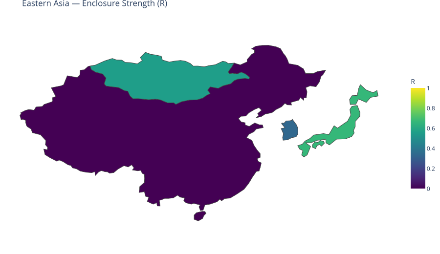
The Eastern Asia region has a population-weighted average RTLP score of 0.06. Across its 5 member countries, roughly 6% of the nine core protections are in place on average, corresponding to an estimated $5,467.0 billion in capital exclusions (lost potential GDP) annually. The region demonstrates particular strength in Protection Against Arbitrary Detention, Access to Justice, where a substantial share of countries satisfy the binarization thresholds for those indicators. These protections represent opportunities to support greater economic scale for life and capital.
Strengthening the areas with lower implementation—especially Freedom from Torture and Inhumane Treatm, Socioeconomic Conditions—is associated with the largest opportunities for realizing additional scale in the region (after the 25% contextual bound). The cross-sectional association links stronger protections to greater economic scale of roughly $2,154.7 billion annually for the region as a whole (within the bound). Whether and how much of that association is realized depends on the other determinants of output (industry structure, resources, human capital, history) that the model explicitly accounts for by bounding the contribution of these nine factors.
| Country | R | Capital Exclusions |
|---|---|---|
| China | 0.00 | $4.69T |
| Japan | 0.67 | $402.8B |
| South Korea | 0.33 | $375.1B |
| Mongolia | 0.56 | $3.2B |
| North Korea | 0.00 | $0 |
| REGIONAL TOTAL (5 countries) | $5.47T |
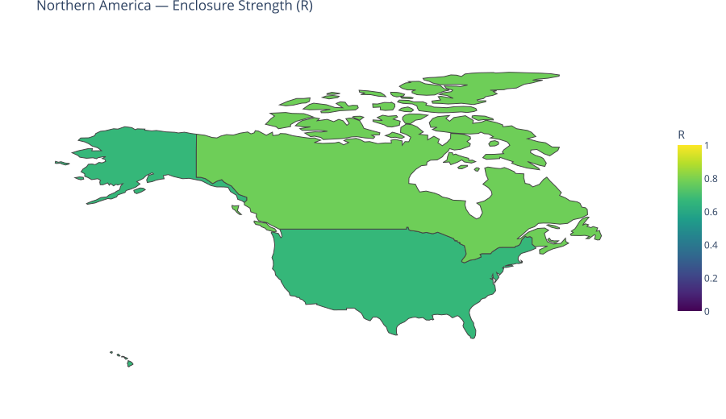
The Northern America region has a population-weighted average RTLP score of 0.68. Across its 2 member countries, roughly 68% of the nine core protections are in place on average, corresponding to an estimated $3,024.7 billion in capital exclusions (lost potential GDP) annually. The region demonstrates particular strength in Law Enforcement Accountability, Protection Against Arbitrary Detention, where a substantial share of countries satisfy the binarization thresholds for those indicators. These protections represent opportunities to support greater economic scale for life and capital.
Strengthening the areas with lower implementation—especially Socioeconomic Conditions, Existence of Legal Protections—is associated with the largest opportunities for realizing additional scale in the region (after the 25% contextual bound). The cross-sectional association links stronger protections to greater economic scale of roughly $2,066.3 billion annually for the region as a whole (within the bound). Whether and how much of that association is realized depends on the other determinants of output (industry structure, resources, human capital, history) that the model explicitly accounts for by bounding the contribution of these nine factors.
| Country | R | Capital Exclusions |
|---|---|---|
| United States | 0.67 | $2.88T |
| Canada | 0.78 | $149.6B |
| REGIONAL TOTAL (2 countries) | $3.02T |
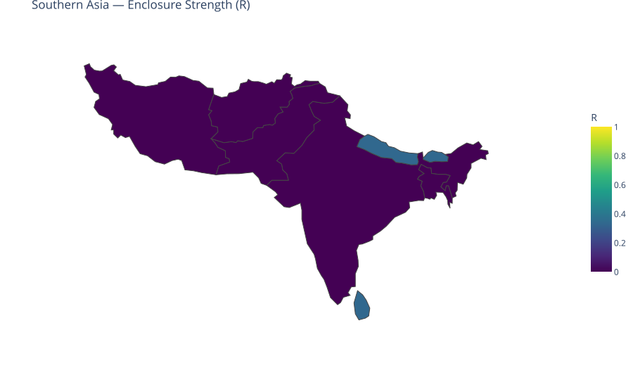
The Southern Asia region has a population-weighted average RTLP score of 0.01. Across its 9 member countries, roughly 1% of the nine core protections are in place on average, corresponding to an estimated $1,336.5 billion in capital exclusions (lost potential GDP) annually. The region demonstrates particular strength in Protection Against Arbitrary Detention, Access to Justice, where a substantial share of countries satisfy the binarization thresholds for those indicators. These protections represent opportunities to support greater economic scale for life and capital.
Strengthening the areas with lower implementation—especially Civilian Protection in Conflict Zones, Socioeconomic Conditions—is associated with the largest opportunities for realizing additional scale in the region (after the 25% contextual bound). The cross-sectional association links stronger protections to greater economic scale of roughly $450.6 billion annually for the region as a whole (within the bound). Whether and how much of that association is realized depends on the other determinants of output (industry structure, resources, human capital, history) that the model explicitly accounts for by bounding the contribution of these nine factors.
| Country | R | Capital Exclusions |
|---|---|---|
| India | 0.00 | $977.5B |
| Iran | 0.00 | $118.8B |
| Bangladesh | 0.00 | $112.5B |
| Pakistan | 0.00 | $92.9B |
| Sri Lanka | 0.33 | $19.8B |
| Nepal | 0.33 | $8.6B |
| Afghanistan | 0.00 | $4.4B |
| Maldives | 0.33 | $1.4B |
| Bhutan | 0.33 | $606.5M |
| REGIONAL TOTAL (9 countries) | $1.34T |
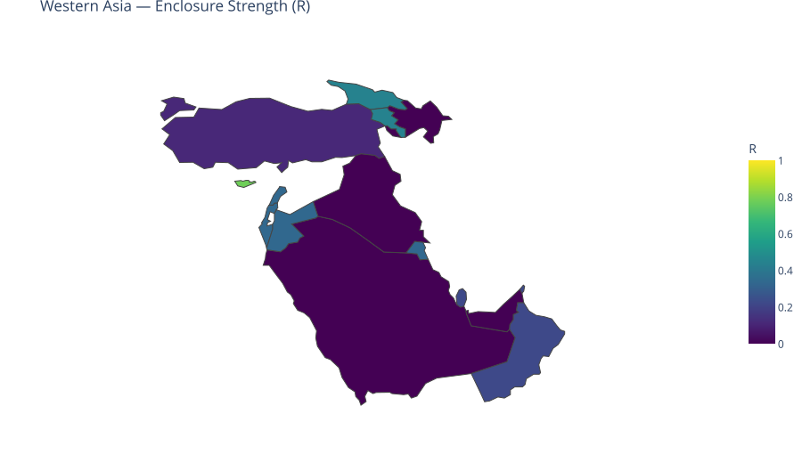
The Western Asia region has a population-weighted average RTLP score of 0.09. Across its 17 member countries, roughly 9% of the nine core protections are in place on average, corresponding to an estimated $1,132.6 billion in capital exclusions (lost potential GDP) annually. The region demonstrates particular strength in Protection Against Arbitrary Detention, Access to Justice, where a substantial share of countries satisfy the binarization thresholds for those indicators. These protections represent opportunities to support greater economic scale for life and capital.
Strengthening the areas with lower implementation—especially Existence of Legal Protections, Independent Judiciary—is associated with the largest opportunities for realizing additional scale in the region (after the 25% contextual bound). The cross-sectional association links stronger protections to greater economic scale of roughly $429.7 billion annually for the region as a whole (within the bound). Whether and how much of that association is realized depends on the other determinants of output (industry structure, resources, human capital, history) that the model explicitly accounts for by bounding the contribution of these nine factors.
| Country | R | Capital Exclusions |
|---|---|---|
| Türkiye | 0.11 | $339.8B |
| Saudi Arabia | 0.00 | $310.0B |
| United Arab Emirates | 0.00 | $138.1B |
| Israel | 0.33 | $108.1B |
| Iraq | 0.00 | $69.9B |
| Qatar | 0.22 | $51.1B |
| Kuwait | 0.33 | $32.0B |
| Oman | 0.22 | $25.0B |
| Azerbaijan | 0.00 | $18.6B |
| Bahrain | 0.00 | $11.8B |
| Jordan | 0.33 | $10.7B |
| Georgia | 0.44 | $5.7B |
| Armenia | 0.44 | $4.3B |
| Lebanon | 0.33 | $4.0B |
| Cyprus | 0.78 | $3.5B |
| Syria | 0.00 | $0 |
| Yemen | 0.00 | $0 |
| REGIONAL TOTAL (17 countries) | $1.13T |
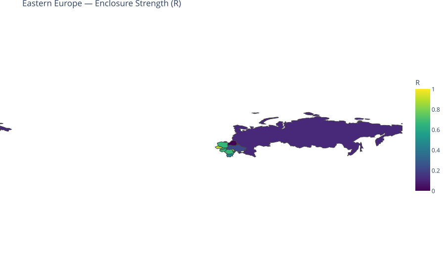
The Eastern Europe region has a population-weighted average RTLP score of 0.31. Across its 10 member countries, roughly 31% of the nine core protections are in place on average, corresponding to an estimated $798.9 billion in capital exclusions (lost potential GDP) annually. The region demonstrates particular strength in Protection Against Arbitrary Detention, Access to Justice, where a substantial share of countries satisfy the binarization thresholds for those indicators. These protections represent opportunities to support greater economic scale for life and capital.
Strengthening the areas with lower implementation—especially Existence of Legal Protections, Independent Judiciary—is associated with the largest opportunities for realizing additional scale in the region (after the 25% contextual bound). The cross-sectional association links stronger protections to greater economic scale of roughly $410.2 billion annually for the region as a whole (within the bound). Whether and how much of that association is realized depends on the other determinants of output (industry structure, resources, human capital, history) that the model explicitly accounts for by bounding the contribution of these nine factors.
| Country | R | Capital Exclusions |
|---|---|---|
| Russia | 0.11 | $534.3B |
| Poland | 0.67 | $91.8B |
| Ukraine | 0.22 | $47.6B |
| Romania | 0.67 | $38.3B |
| Hungary | 0.67 | $22.3B |
| Belarus | 0.00 | $19.0B |
| Bulgaria | 0.44 | $18.9B |
| Slovakia | 0.67 | $14.1B |
| Czechia | 0.89 | $11.6B |
| Moldova | 0.78 | $1.2B |
| REGIONAL TOTAL (10 countries) | $798.9B |
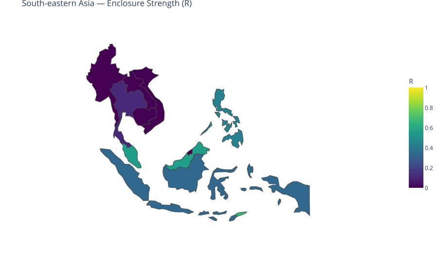
The South-eastern Asia region has a population-weighted average RTLP score of 0.26. Across its 11 member countries, roughly 26% of the nine core protections are in place on average, corresponding to an estimated $756.2 billion in capital exclusions (lost potential GDP) annually. The region demonstrates particular strength in Protection Against Arbitrary Detention, Access to Justice, where a substantial share of countries satisfy the binarization thresholds for those indicators. These protections represent opportunities to support greater economic scale for life and capital.
Strengthening the areas with lower implementation—especially Existence of Legal Protections, Independent Judiciary—is associated with the largest opportunities for realizing additional scale in the region (after the 25% contextual bound). The cross-sectional association links stronger protections to greater economic scale of roughly $334.6 billion annually for the region as a whole (within the bound). Whether and how much of that association is realized depends on the other determinants of output (industry structure, resources, human capital, history) that the model explicitly accounts for by bounding the contribution of these nine factors.
| Country | R | Capital Exclusions |
|---|---|---|
| Indonesia | 0.33 | $279.3B |
| Thailand | 0.11 | $131.6B |
| Vietnam | 0.00 | $119.1B |
| Philippines | 0.44 | $76.9B |
| Malaysia | 0.56 | $56.3B |
| Singapore | 0.67 | $54.7B |
| Myanmar | 0.00 | $18.5B |
| Cambodia | 0.00 | $11.6B |
| Laos | 0.00 | $4.1B |
| Brunei Darussalam | 0.00 | $3.8B |
| Timor-Leste | 0.67 | $186.6M |
| REGIONAL TOTAL (11 countries) | $756.2B |
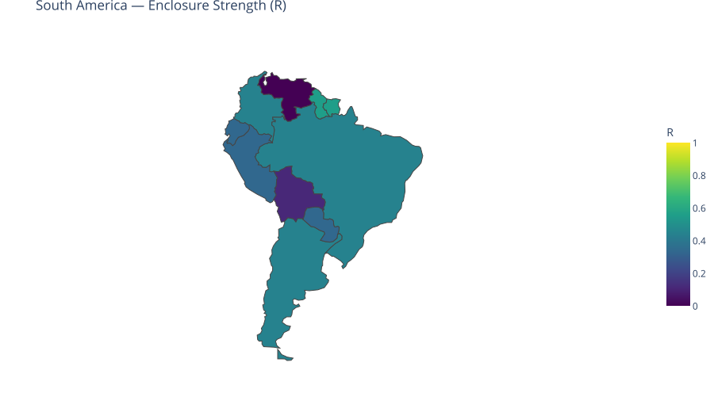
The South America region has a population-weighted average RTLP score of 0.42. Across its 12 member countries, roughly 42% of the nine core protections are in place on average, corresponding to an estimated $679.7 billion in capital exclusions (lost potential GDP) annually. The region demonstrates particular strength in Freedom of Expression and Whistleblower , Protection Against Arbitrary Detention, where a substantial share of countries satisfy the binarization thresholds for those indicators. These protections represent opportunities to support greater economic scale for life and capital.
Strengthening the areas with lower implementation—especially Independent Judiciary, Freedom from Torture and Inhumane Treatm—is associated with the largest opportunities for realizing additional scale in the region (after the 25% contextual bound). The cross-sectional association links stronger protections to greater economic scale of roughly $388.2 billion annually for the region as a whole (within the bound). Whether and how much of that association is realized depends on the other determinants of output (industry structure, resources, human capital, history) that the model explicitly accounts for by bounding the contribution of these nine factors.
| Country | R | Capital Exclusions |
|---|---|---|
| Brazil | 0.44 | $364.3B |
| Argentina | 0.44 | $106.4B |
| Colombia | 0.44 | $69.8B |
| Peru | 0.33 | $57.8B |
| Venezuela | 0.00 | $30.0B |
| Ecuador | 0.33 | $24.9B |
| Bolivia | 0.11 | $13.7B |
| Paraguay | 0.33 | $8.9B |
| Guyana | 0.56 | $3.3B |
| Suriname | 0.56 | $588.9M |
| Chile | 1.00 | $0 |
| Uruguay | 1.00 | $0 |
| REGIONAL TOTAL (12 countries) | $679.7B |
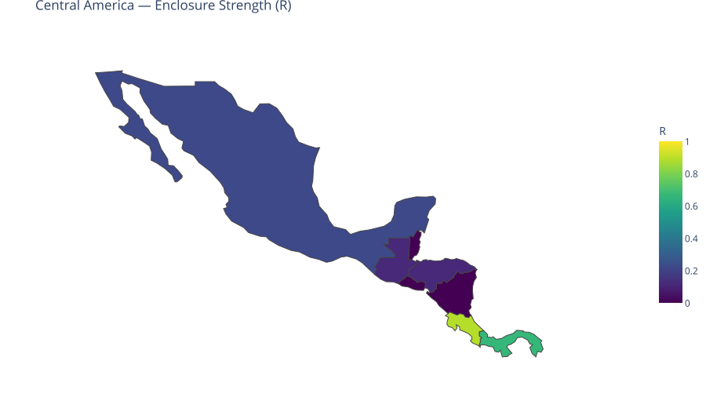
The Central America region has a population-weighted average RTLP score of 0.22. Across its 8 member countries, roughly 22% of the nine core protections are in place on average, corresponding to an estimated $497.1 billion in capital exclusions (lost potential GDP) annually. The region demonstrates particular strength in Freedom of Expression and Whistleblower , where a substantial share of countries satisfy the binarization thresholds for those indicators. These protections represent opportunities to support greater economic scale for life and capital.
Strengthening the areas with lower implementation—especially Existence of Legal Protections, Independent Judiciary—is associated with the largest opportunities for realizing additional scale in the region (after the 25% contextual bound). The cross-sectional association links stronger protections to greater economic scale of roughly $154.5 billion annually for the region as a whole (within the bound). Whether and how much of that association is realized depends on the other determinants of output (industry structure, resources, human capital, history) that the model explicitly accounts for by bounding the contribution of these nine factors.
| Country | R | Capital Exclusions |
|---|---|---|
| Mexico | 0.22 | $433.2B |
| Guatemala | 0.11 | $28.3B |
| Honduras | 0.11 | $9.3B |
| El Salvador | 0.00 | $8.8B |
| Panama | 0.67 | $8.7B |
| Nicaragua | 0.00 | $4.9B |
| Costa Rica | 0.89 | $3.2B |
| Belize | 0.00 | $800.9M |
| REGIONAL TOTAL (8 countries) | $497.1B |
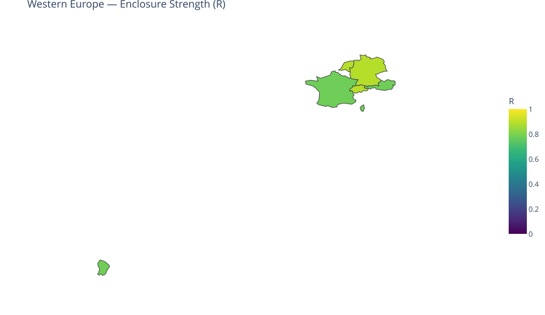
The Western Europe region has a population-weighted average RTLP score of 0.85. Across its 9 member countries, roughly 85% of the nine core protections are in place on average, corresponding to an estimated $479.1 billion in capital exclusions (lost potential GDP) annually. The region demonstrates particular strength in Law Enforcement Accountability, Protection Against Arbitrary Detention, where a substantial share of countries satisfy the binarization thresholds for those indicators. These protections represent opportunities to support greater economic scale for life and capital.
Strengthening the areas with lower implementation—especially Freedom from Torture and Inhumane Treatm, Socioeconomic Conditions—is associated with the largest opportunities for realizing additional scale in the region (after the 25% contextual bound). The cross-sectional association links stronger protections to greater economic scale of roughly $458.0 billion annually for the region as a whole (within the bound). Whether and how much of that association is realized depends on the other determinants of output (industry structure, resources, human capital, history) that the model explicitly accounts for by bounding the contribution of these nine factors.
| Country | R | Capital Exclusions |
|---|---|---|
| France | 0.78 | $210.7B |
| Germany | 0.89 | $156.2B |
| Netherlands | 0.89 | $40.5B |
| Austria | 0.78 | $35.7B |
| Switzerland | 0.89 | $31.2B |
| Monaco | 0.00 | $2.8B |
| Liechtenstein | 0.00 | $2.1B |
| Luxembourg | 1.00 | $0 |
| Belgium | 1.00 | $0 |
| REGIONAL TOTAL (9 countries) | $479.1B |
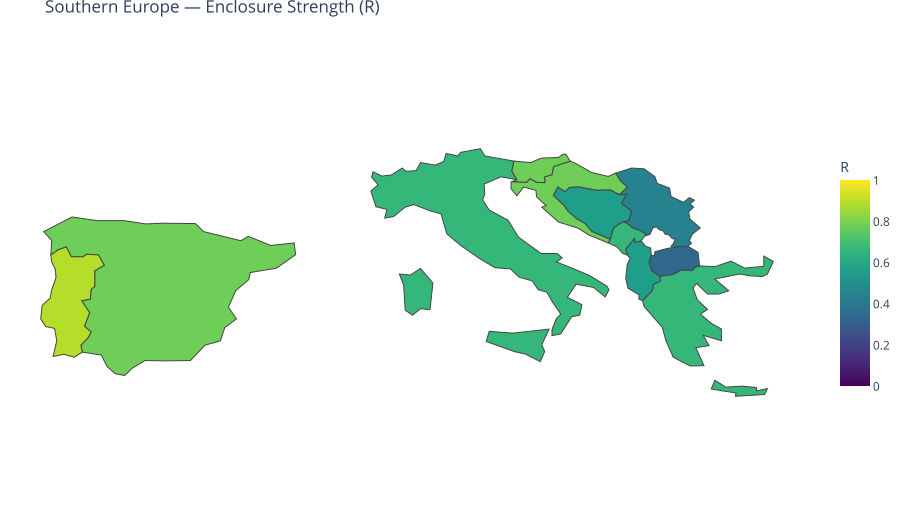
The Southern Europe region has a population-weighted average RTLP score of 0.71. Across its 14 member countries, roughly 71% of the nine core protections are in place on average, corresponding to an estimated $430.2 billion in capital exclusions (lost potential GDP) annually. The region demonstrates particular strength in Protection Against Arbitrary Detention, Access to Justice, where a substantial share of countries satisfy the binarization thresholds for those indicators. These protections represent opportunities to support greater economic scale for life and capital.
Strengthening the areas with lower implementation—especially Independent Judiciary, Existence of Legal Protections—is associated with the largest opportunities for realizing additional scale in the region (after the 25% contextual bound). The cross-sectional association links stronger protections to greater economic scale of roughly $419.4 billion annually for the region as a whole (within the bound). Whether and how much of that association is realized depends on the other determinants of output (industry structure, resources, human capital, history) that the model explicitly accounts for by bounding the contribution of these nine factors.
| Country | R | Capital Exclusions |
|---|---|---|
| Italy | 0.67 | $238.1B |
| Spain | 0.78 | $115.0B |
| Greece | 0.67 | $25.6B |
| Serbia | 0.44 | $15.0B |
| Portugal | 0.89 | $10.4B |
| Croatia | 0.78 | $6.2B |
| Slovenia | 0.78 | $4.9B |
| Bosnia and Herzegovina | 0.56 | $3.9B |
| Albania | 0.56 | $3.6B |
| North Macedonia | 0.33 | $3.4B |
| Malta | 0.78 | $1.7B |
| Andorra | 0.00 | $1.0B |
| Montenegro | 0.67 | $827.0M |
| San Marino | 0.00 | $508.6M |
| REGIONAL TOTAL (14 countries) | $430.2B |
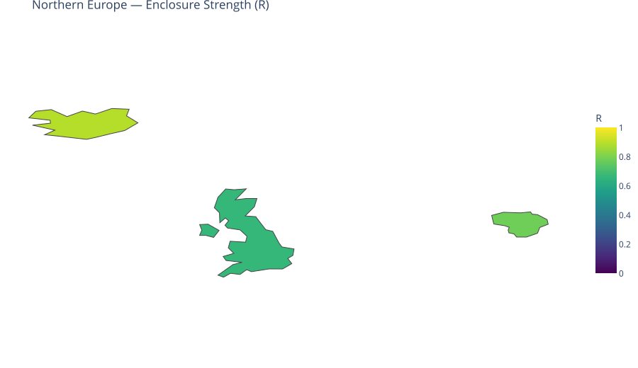
The Northern Europe region has a population-weighted average RTLP score of 0.78. Across its 10 member countries, roughly 78% of the nine core protections are in place on average, corresponding to an estimated $375.4 billion in capital exclusions (lost potential GDP) annually. The region demonstrates particular strength in Law Enforcement Accountability, Protection Against Arbitrary Detention, where a substantial share of countries satisfy the binarization thresholds for those indicators. These protections represent opportunities to support greater economic scale for life and capital.
Strengthening the areas with lower implementation—especially Existence of Legal Protections, Socioeconomic Conditions—is associated with the largest opportunities for realizing additional scale in the region (after the 25% contextual bound). The cross-sectional association links stronger protections to greater economic scale of roughly $372.5 billion annually for the region as a whole (within the bound). Whether and how much of that association is realized depends on the other determinants of output (industry structure, resources, human capital, history) that the model explicitly accounts for by bounding the contribution of these nine factors.
| Country | R | Capital Exclusions |
|---|---|---|
| United Kingdom | 0.67 | $368.6B |
| Lithuania | 0.78 | $5.7B |
| Iceland | 0.89 | $1.1B |
| Norway | 1.00 | $0 |
| Ireland | 1.00 | $0 |
| Latvia | 1.00 | $0 |
| Denmark | 1.00 | $0 |
| Estonia | 1.00 | $0 |
| Finland | 1.00 | $0 |
| Sweden | 1.00 | $0 |
| REGIONAL TOTAL (10 countries) | $375.4B |
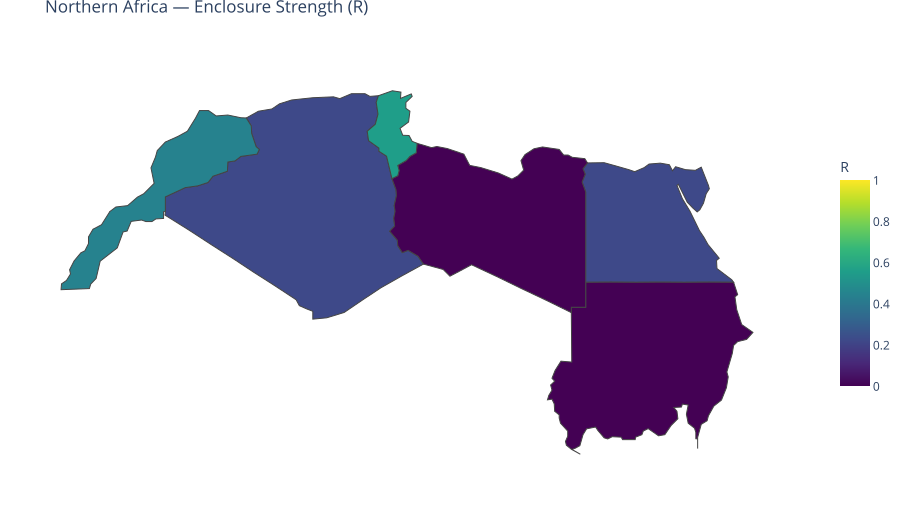
The Northern Africa region has a population-weighted average RTLP score of 0.22. Across its 6 member countries, roughly 22% of the nine core protections are in place on average, corresponding to an estimated $211.4 billion in capital exclusions (lost potential GDP) annually. The region demonstrates particular strength in Protection Against Arbitrary Detention, Access to Justice, where a substantial share of countries satisfy the binarization thresholds for those indicators. These protections represent opportunities to support greater economic scale for life and capital.
Strengthening the areas with lower implementation—especially Freedom from Torture and Inhumane Treatm, Socioeconomic Conditions—is associated with the largest opportunities for realizing additional scale in the region (after the 25% contextual bound). The cross-sectional association links stronger protections to greater economic scale of roughly $95.0 billion annually for the region as a whole (within the bound). Whether and how much of that association is realized depends on the other determinants of output (industry structure, resources, human capital, history) that the model explicitly accounts for by bounding the contribution of these nine factors.
| Country | R | Capital Exclusions |
|---|---|---|
| Egypt | 0.22 | $90.8B |
| Algeria | 0.22 | $62.8B |
| Morocco | 0.44 | $26.4B |
| Sudan | 0.00 | $12.4B |
| Libya | 0.00 | $12.1B |
| Tunisia | 0.56 | $6.8B |
| REGIONAL TOTAL (6 countries) | $211.4B |
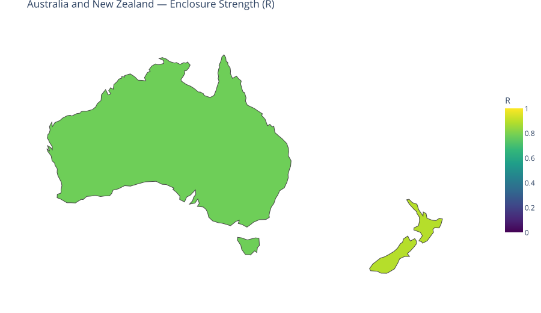
The Australia and New Zealand region has a population-weighted average RTLP score of 0.80. Across its 2 member countries, roughly 80% of the nine core protections are in place on average, corresponding to an estimated $125.8 billion in capital exclusions (lost potential GDP) annually. The region demonstrates particular strength in Existence of Legal Protections, Independent Judiciary, where a substantial share of countries satisfy the binarization thresholds for those indicators. These protections represent opportunities to support greater economic scale for life and capital.
Strengthening the areas with lower implementation—especially Freedom from Torture and Inhumane Treatm, Socioeconomic Conditions—is associated with the largest opportunities for realizing additional scale in the region (after the 25% contextual bound). The cross-sectional association links stronger protections to greater economic scale of roughly $125.8 billion annually for the region as a whole (within the bound). Whether and how much of that association is realized depends on the other determinants of output (industry structure, resources, human capital, history) that the model explicitly accounts for by bounding the contribution of these nine factors.
| Country | R | Capital Exclusions |
|---|---|---|
| Australia | 0.78 | $117.1B |
| New Zealand | 0.89 | $8.7B |
| REGIONAL TOTAL (2 countries) | $125.8B |
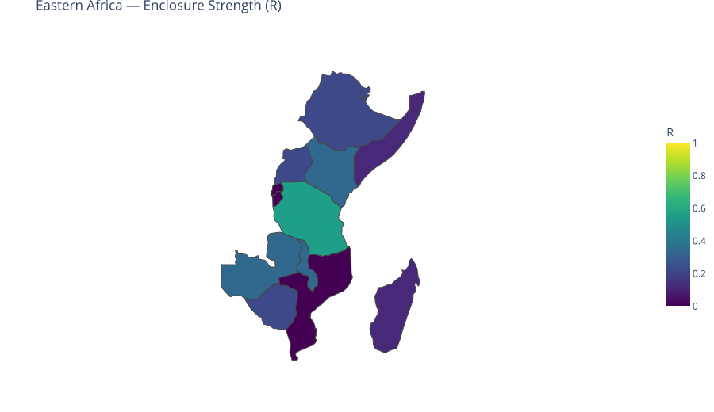
The Eastern Africa region has a population-weighted average RTLP score of 0.24. Across its 18 member countries, roughly 24% of the nine core protections are in place on average, corresponding to an estimated $121.7 billion in capital exclusions (lost potential GDP) annually. The region demonstrates particular strength in Protection Against Arbitrary Detention, Access to Justice, where a substantial share of countries satisfy the binarization thresholds for those indicators. These protections represent opportunities to support greater economic scale for life and capital.
Strengthening the areas with lower implementation—especially Freedom from Torture and Inhumane Treatm, Socioeconomic Conditions—is associated with the largest opportunities for realizing additional scale in the region (after the 25% contextual bound). The cross-sectional association links stronger protections to greater economic scale of roughly $56.6 billion annually for the region as a whole (within the bound). Whether and how much of that association is realized depends on the other determinants of output (industry structure, resources, human capital, history) that the model explicitly accounts for by bounding the contribution of these nine factors.
| Country | R | Capital Exclusions |
|---|---|---|
| Ethiopia | 0.22 | $34.9B |
| Kenya | 0.33 | $24.1B |
| Uganda | 0.22 | $12.6B |
| Tanzania | 0.56 | $10.8B |
| Zimbabwe | 0.22 | $9.7B |
| Mozambique | 0.00 | $5.7B |
| Zambia | 0.33 | $5.1B |
| Madagascar | 0.11 | $4.4B |
| Rwanda | 0.00 | $3.6B |
| Mauritius | 0.22 | $3.5B |
| Somalia | 0.11 | $3.0B |
| Malawi | 0.33 | $2.3B |
| Djibouti | 0.22 | $968.8M |
| Burundi | 0.00 | $770.6M |
| Comoros | 0.11 | $360.2M |
| Seychelles | 0.89 | $72.2M |
| Eritrea | 0.00 | $0 |
| South Sudan | 0.00 | $0 |
| REGIONAL TOTAL (18 countries) | $121.7B |
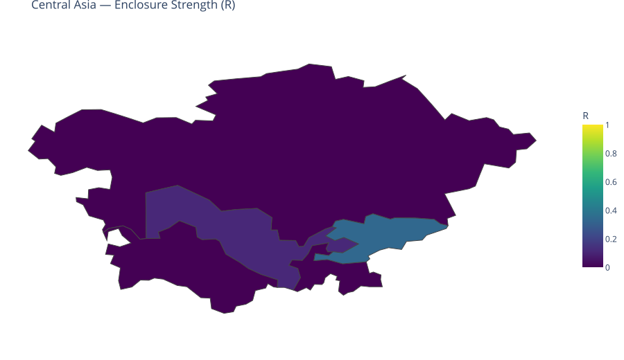
The Central Asia region has a population-weighted average RTLP score of 0.08. Across its 5 member countries, roughly 8% of the nine core protections are in place on average, corresponding to an estimated $121.5 billion in capital exclusions (lost potential GDP) annually. The region demonstrates particular strength in several key areas, where a substantial share of countries satisfy the binarization thresholds for those indicators. These protections represent opportunities to support greater economic scale for life and capital.
Strengthening the areas with lower implementation—especially Freedom from Torture and Inhumane Treatm, Civilian Protection in Conflict Zones—is associated with the largest opportunities for realizing additional scale in the region (after the 25% contextual bound). The cross-sectional association links stronger protections to greater economic scale of roughly $42.3 billion annually for the region as a whole (within the bound). Whether and how much of that association is realized depends on the other determinants of output (industry structure, resources, human capital, history) that the model explicitly accounts for by bounding the contribution of these nine factors.
| Country | R | Capital Exclusions |
|---|---|---|
| Kazakhstan | 0.00 | $72.9B |
| Uzbekistan | 0.11 | $28.7B |
| Turkmenistan | 0.00 | $12.8B |
| Tajikistan | 0.00 | $3.6B |
| Kyrgyzstan | 0.33 | $3.5B |
| REGIONAL TOTAL (5 countries) | $121.5B |
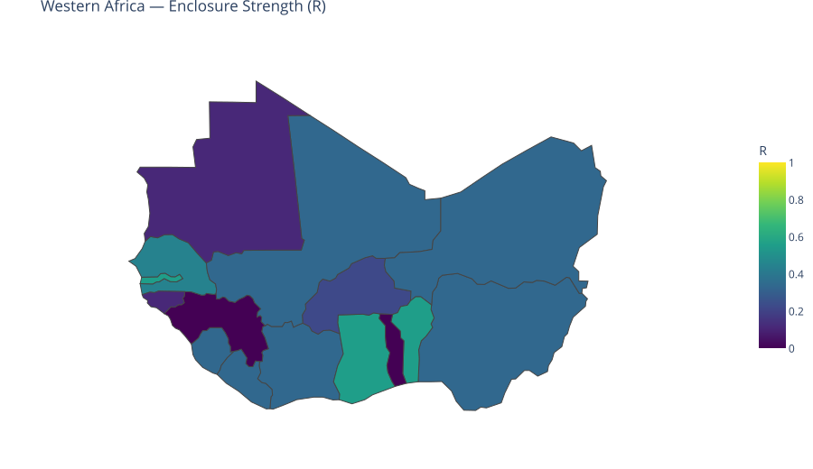
The Western Africa region has a population-weighted average RTLP score of 0.34. Across its 16 member countries, roughly 34% of the nine core protections are in place on average, corresponding to an estimated $117.1 billion in capital exclusions (lost potential GDP) annually. The region demonstrates particular strength in Freedom of Expression and Whistleblower , Protection Against Arbitrary Detention, where a substantial share of countries satisfy the binarization thresholds for those indicators. These protections represent opportunities to support greater economic scale for life and capital.
Strengthening the areas with lower implementation—especially Independent Judiciary, Socioeconomic Conditions—is associated with the largest opportunities for realizing additional scale in the region (after the 25% contextual bound). The cross-sectional association links stronger protections to greater economic scale of roughly $57.6 billion annually for the region as a whole (within the bound). Whether and how much of that association is realized depends on the other determinants of output (industry structure, resources, human capital, history) that the model explicitly accounts for by bounding the contribution of these nine factors.
| Country | R | Capital Exclusions |
|---|---|---|
| Nigeria | 0.33 | $50.5B |
| Côte d'Ivoire | 0.33 | $17.4B |
| Ghana | 0.56 | $11.0B |
| Guinea | 0.00 | $6.3B |
| Senegal | 0.44 | $5.5B |
| Burkina Faso | 0.22 | $5.4B |
| Mali | 0.33 | $5.4B |
| Niger | 0.33 | $4.0B |
| Benin | 0.56 | $2.9B |
| Mauritania | 0.11 | $2.7B |
| Togo | 0.00 | $2.7B |
| Sierra Leone | 0.33 | $1.4B |
| Liberia | 0.33 | $955.9M |
| Guinea-Bissau | 0.11 | $554.6M |
| Gambia | 0.56 | $320.7M |
| Cabo Verde | 0.67 | $272.5M |
| REGIONAL TOTAL (16 countries) | $117.1B |
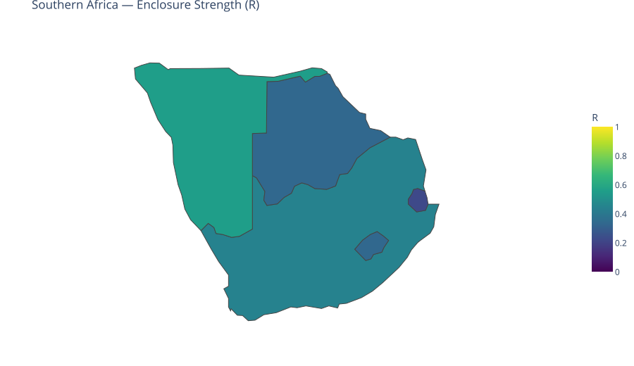
The Southern Africa region has a population-weighted average RTLP score of 0.44. Across its 5 member countries, roughly 44% of the nine core protections are in place on average, corresponding to an estimated $74.1 billion in capital exclusions (lost potential GDP) annually. The region demonstrates particular strength in Protection Against Arbitrary Detention, Access to Justice, where a substantial share of countries satisfy the binarization thresholds for those indicators. These protections represent opportunities to support greater economic scale for life and capital.
Strengthening the areas with lower implementation—especially Independent Judiciary, Socioeconomic Conditions—is associated with the largest opportunities for realizing additional scale in the region (after the 25% contextual bound). The cross-sectional association links stronger protections to greater economic scale of roughly $44.1 billion annually for the region as a whole (within the bound). Whether and how much of that association is realized depends on the other determinants of output (industry structure, resources, human capital, history) that the model explicitly accounts for by bounding the contribution of these nine factors.
| Country | R | Capital Exclusions |
|---|---|---|
| South Africa | 0.44 | $66.9B |
| Botswana | 0.33 | $3.9B |
| Namibia | 0.56 | $1.8B |
| Eswatini | 0.22 | $1.1B |
| Lesotho | 0.33 | $454.4M |
| REGIONAL TOTAL (5 countries) | $74.1B |
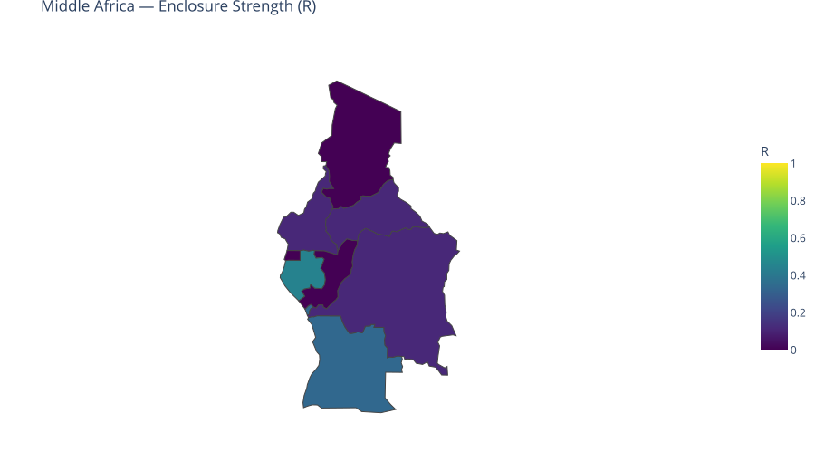
The Middle Africa region has a population-weighted average RTLP score of 0.14. Across its 9 member countries, roughly 14% of the nine core protections are in place on average, corresponding to an estimated $67.6 billion in capital exclusions (lost potential GDP) annually. The region demonstrates particular strength in Freedom of Expression and Whistleblower , where a substantial share of countries satisfy the binarization thresholds for those indicators. These protections represent opportunities to support greater economic scale for life and capital.
Strengthening the areas with lower implementation—especially Civilian Protection in Conflict Zones, Socioeconomic Conditions—is associated with the largest opportunities for realizing additional scale in the region (after the 25% contextual bound). The cross-sectional association links stronger protections to greater economic scale of roughly $28.2 billion annually for the region as a whole (within the bound). Whether and how much of that association is realized depends on the other determinants of output (industry structure, resources, human capital, history) that the model explicitly accounts for by bounding the contribution of these nine factors.
| Country | R | Capital Exclusions |
|---|---|---|
| Angola | 0.33 | $20.2B |
| DR Congo | 0.11 | $17.7B |
| Cameroon | 0.11 | $13.3B |
| Chad | 0.00 | $4.9B |
| Congo Republic | 0.00 | $3.9B |
| Gabon | 0.44 | $3.5B |
| Equatorial Guinea | 0.00 | $3.2B |
| Central African Republic | 0.11 | $687.9M |
| Sao Tome and Principe | 0.44 | $137.0M |
| REGIONAL TOTAL (9 countries) | $67.6B |
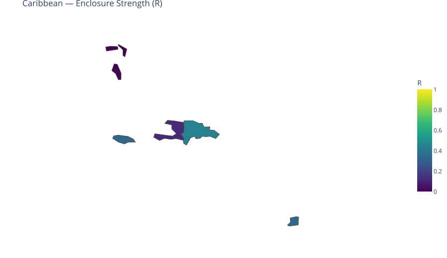
The Caribbean region has a population-weighted average RTLP score of 0.20. Across its 13 member countries, roughly 20% of the nine core protections are in place on average, corresponding to an estimated $43.3 billion in capital exclusions (lost potential GDP) annually. The region demonstrates particular strength in several key areas, where a substantial share of countries satisfy the binarization thresholds for those indicators. These protections represent opportunities to support greater economic scale for life and capital.
Strengthening the areas with lower implementation—especially Socioeconomic Conditions, Existence of Legal Protections—is associated with the largest opportunities for realizing additional scale in the region (after the 25% contextual bound). The cross-sectional association links stronger protections to greater economic scale of roughly $18.0 billion annually for the region as a whole (within the bound). Whether and how much of that association is realized depends on the other determinants of output (industry structure, resources, human capital, history) that the model explicitly accounts for by bounding the contribution of these nine factors.
| Country | R | Capital Exclusions |
|---|---|---|
| Dominican Republic | 0.44 | $20.7B |
| Haiti | 0.11 | $6.3B |
| Trinidad and Tobago | 0.33 | $5.1B |
| Jamaica | 0.33 | $4.4B |
| Bahamas | 0.00 | $4.0B |
| St. Lucia | 0.00 | $637.3M |
| Antigua and Barbuda | 0.00 | $551.9M |
| Barbados | 0.78 | $499.9M |
| Grenada | 0.00 | $343.0M |
| St. Vincent and the Grenadines | 0.00 | $289.3M |
| St. Kitts and Nevis | 0.00 | $280.6M |
| Dominica | 0.00 | $172.2M |
| Cuba | 0.00 | $0 |
| REGIONAL TOTAL (13 countries) | $43.3B |
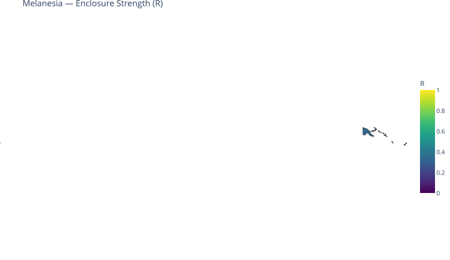
The Melanesia region has a population-weighted average RTLP score of 0.36. Across its 4 member countries, roughly 36% of the nine core protections are in place on average, corresponding to an estimated $7.6 billion in capital exclusions (lost potential GDP) annually. The region demonstrates particular strength in Protection Against Arbitrary Detention, Access to Justice, where a substantial share of countries satisfy the binarization thresholds for those indicators. These protections represent opportunities to support greater economic scale for life and capital.
Strengthening the areas with lower implementation—especially Freedom from Torture and Inhumane Treatm, Socioeconomic Conditions—is associated with the largest opportunities for realizing additional scale in the region (after the 25% contextual bound). The cross-sectional association links stronger protections to greater economic scale of roughly $4.0 billion annually for the region as a whole (within the bound). Whether and how much of that association is realized depends on the other determinants of output (industry structure, resources, human capital, history) that the model explicitly accounts for by bounding the contribution of these nine factors.
| Country | R | Capital Exclusions |
|---|---|---|
| Papua New Guinea | 0.33 | $6.4B |
| Fiji | 0.56 | $795.8M |
| Solomon Islands | 0.33 | $316.8M |
| Vanuatu | 0.56 | $149.1M |
| REGIONAL TOTAL (4 countries) | $7.6B |
The Polynesia region has a population-weighted average RTLP score of 0.00. Across its 4 member countries, roughly 0% of the nine core protections are in place on average, corresponding to an estimated $0.5 billion in capital exclusions (lost potential GDP) annually. The region demonstrates particular strength in several key areas, where a substantial share of countries satisfy the binarization thresholds for those indicators. These protections represent opportunities to support greater economic scale for life and capital.
Strengthening the areas with lower implementation—especially Freedom of Expression and Whistleblower , Socioeconomic Conditions—is associated with the largest opportunities for realizing additional scale in the region (after the 25% contextual bound). The cross-sectional association links stronger protections to greater economic scale of roughly $0.2 billion annually for the region as a whole (within the bound). Whether and how much of that association is realized depends on the other determinants of output (industry structure, resources, human capital, history) that the model explicitly accounts for by bounding the contribution of these nine factors.
| Country | R | Capital Exclusions |
|---|---|---|
| Samoa | 0.00 | $293.9M |
| Tonga | 0.00 | $147.2M |
| Nauru | 0.00 | $40.6M |
| Tuvalu | 0.00 | $15.3M |
| REGIONAL TOTAL (4 countries) | $497.1M |
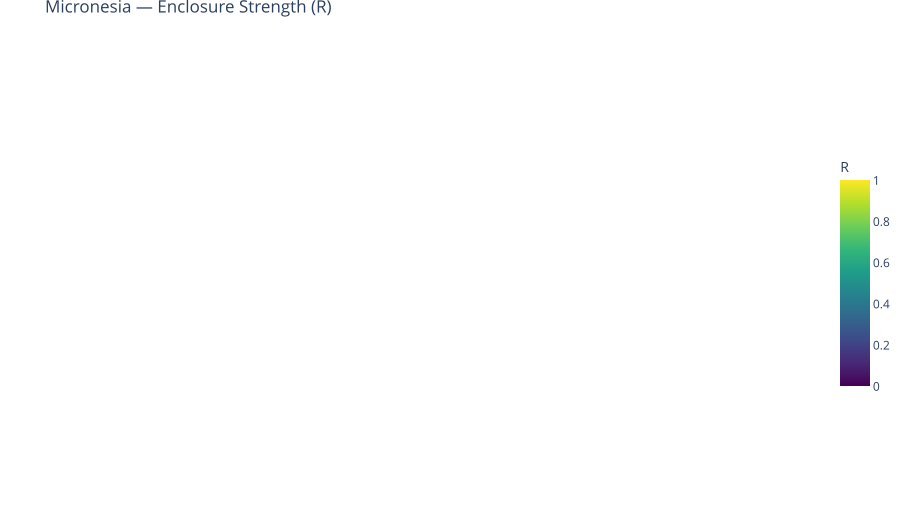
The Micronesia region has a population-weighted average RTLP score of 0.05. Across its 4 member countries, roughly 5% of the nine core protections are in place on average, corresponding to an estimated $0.3 billion in capital exclusions (lost potential GDP) annually. The region demonstrates particular strength in several key areas, where a substantial share of countries satisfy the binarization thresholds for those indicators. These protections represent opportunities to support greater economic scale for life and capital.
Strengthening the areas with lower implementation—especially Access to Justice, Freedom of Expression and Whistleblower —is associated with the largest opportunities for realizing additional scale in the region (after the 25% contextual bound). The cross-sectional association links stronger protections to greater economic scale of roughly $0.1 billion annually for the region as a whole (within the bound). Whether and how much of that association is realized depends on the other determinants of output (industry structure, resources, human capital, history) that the model explicitly accounts for by bounding the contribution of these nine factors.
| Country | R | Capital Exclusions |
|---|---|---|
| Micronesia, Fed. Sts. | 0.00 | $117.9M |
| Kiribati | 0.11 | $77.0M |
| Marshall Islands | 0.00 | $72.5M |
| Palau | 0.00 | $69.1M |
| REGIONAL TOTAL (4 countries) | $336.4M |